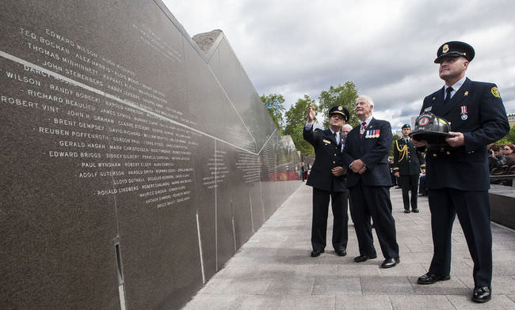
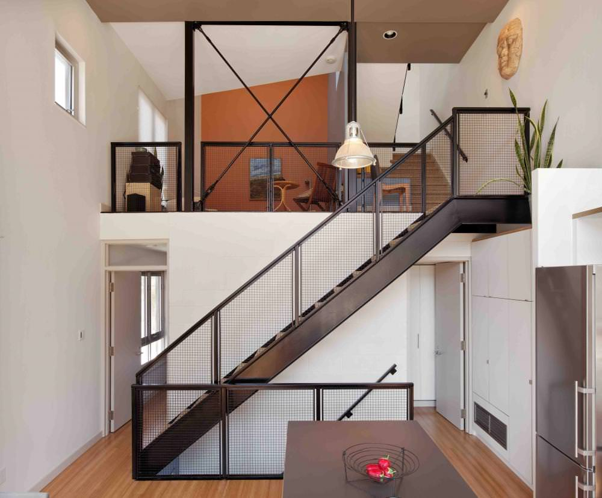

Toronto, Ontario
Founded in 1995, PLANT Architect is an interdisciplinary firm that branches into the domains of architecture, landscape, ecology, furniture, art and graphic design. Our integrated approach fosters a collaborative spirit, a multi-layered design solution and enriches each project with a fine grain of detail.
Our work is exemplified in a diverse range of types and scales, including public parks and intimate garden spaces; residential, corporate and institutional architecture; site-specific art installations and furniture; identity, print and exhibit design.
We partner with public and private organizations and individuals looking to bring difficult site conditions to life with the goal to accentuate the virtues of both natural and unnatural elements. We love opportunities for experimentation and a high degree of involvement in the construction process.
If you are interested in collaborating, please contact us and let’s discuss.
In collaboration with Canadian visual artist and novelist Douglas Coupland, PLANT Architect won a two-stage, national competition to both memorialize fallen firefighters and provide a place for their annual Ceremony Service on Ottawa’s Lebreton Flats.
Work on this existing live-work structure in downtown Toronto involved a 2,000 sf interior renovation and new cladding concepts for the exterior façades. This concept creates a more inviting entry that distinguishes the office entrance from the residential entrance, with an interior door that connects the owners’ Victorian house with the modern tower.
